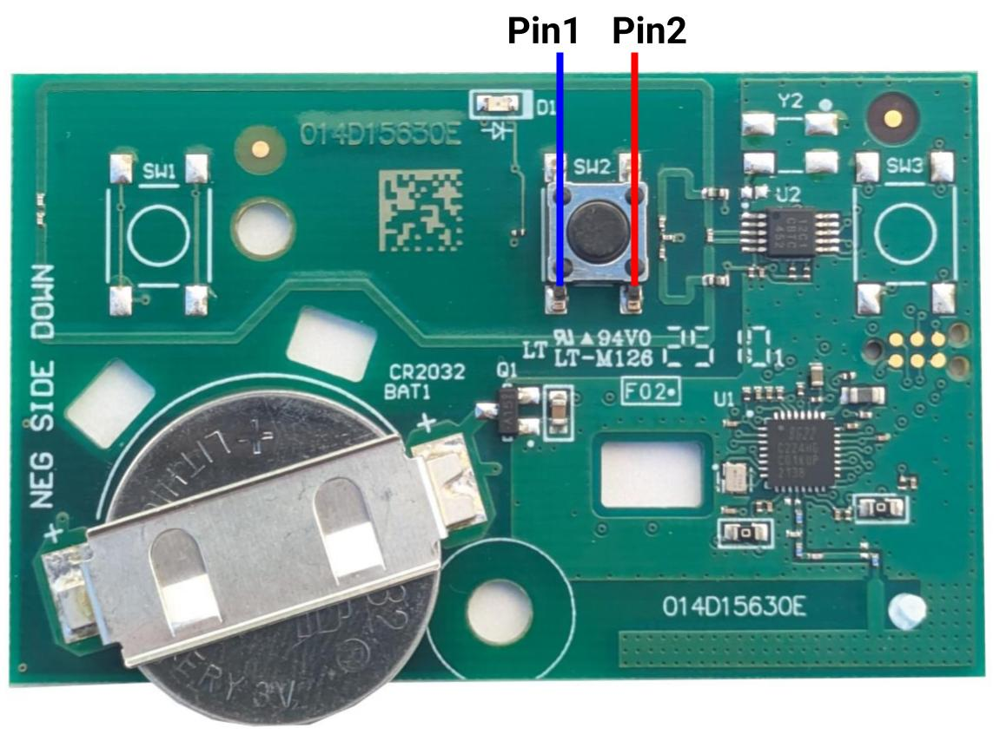
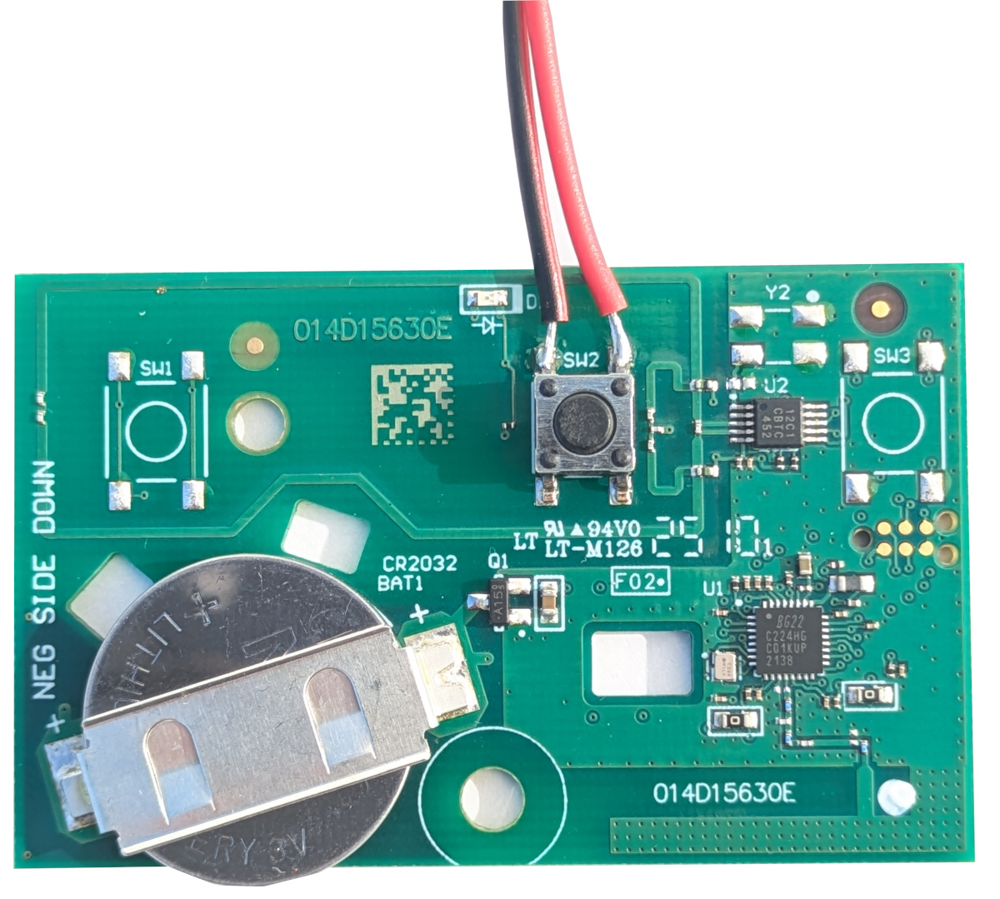
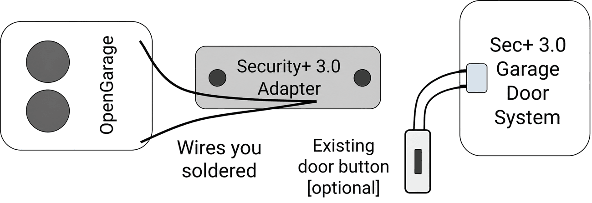

DIY Security+ 3.0 Adapter
OpenGarage v2.3+ supports Security+ 2.0 and 1.0 natively. However, Security+ 3.0 garage door openers, identified by a white Learn button, are not natively supported. To use OpenGarage with a Security+ 3.0 opener, you need a spare compatible remote—a “sacrifice remote”—as an adapter between OpenGarage and the opener.
Here is how it works: OpenGarage's built-in output can simulate a button press on the remote, which subsequently sends the Security+ 3.0 command wirelessly to the opener. This guide explains how to make that adapter yourself by soldering two wires onto the remote's button contacts. For background, see Security+ 3.0: How to Use It with OpenGarage.
Step 1: Prepare a Sacrifice Remote
Prepare a spare Security+ 3.0 remote, such as the LiftMaster L991S or Chamberlain CH361. Pair it with your opener according to its instructions and confirm that the button you intend to modify operates the door successfully.
Step 2: Identify the Button Contacts
Open the remote's enclosure, take out the circuit board, and locate the button you want to solder wires onto. A typical button has four contact pins but only two are unique: the pair of pins on the same line are internally connected therefore are the same pin, as shown below.

Step 3: Polarity and Soldering
Use a multimeter to measure the DC voltage on the two button pins. Swap the probes if necessary until the meter reads a positive voltage, at which point the pin under the red probe is positive, and that under the black probe is negative.
Next, solder a red wire to the positive pin and a black or blue wire to the negative pin. The picture below shows an example. The specific polarity depends on your multimeter findings.

Step 4: Reassemble the Remote
Put the circuit board back into its enclosure. Cut a notch in the enclosure as necessary to allow the soldered wires to pass through.
Step 5: Connect and Configure OpenGarage
Connect the two soldered wires to OpenGarage according to its hardware version:
- v2.3+: Polarity matters. Connect the positive (red) wire to Red/Ctrl terminal on OpenGarage, and the negative wire to White/GND terminal. Set Security+ Version to None.
- v2.2 and earlier: There is no polarity, so the two wires can connect either way. There is also no Security+ Version setting to select.

NOTE: The adapter provides door-button control only; it does not return opener status. OpenGarage can use its ultrasonic distance sensor to monitor door position. Opener light and remote lock control through Security+ 3.0 are not available with this setup.